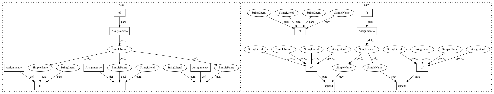

645202b1e62d323d79936eea9452ef3b58084826,official/resnet/estimator_cifar_benchmark.py,EstimatorCifar10BenchmarkTests,_run_and_report_benchmark,#EstimatorCifar10BenchmarkTests#,117
Before Change
break
eval_results = stats["eval_results"]
extras = {}
extras["accuracy_top_1"] = self._json_description(
eval_results["accuracy"].item(),
priority=0)
extras["accuracy_top_5"] = self._json_description(
eval_results["accuracy_top_5"].item())
if examples_per_sec_hook:
exp_per_second_list = examples_per_sec_hook.current_examples_per_sec_list
// ExamplesPerSecondHook skips the first 10 steps.
exp_per_sec = sum(exp_per_second_list) / (len(exp_per_second_list))
extras["exp_per_second"] = self._json_description(exp_per_sec)
self.report_benchmark(
iters=eval_results["global_step"],
wall_time=wall_time_sec,
After Change
break
eval_results = stats["eval_results"]
metrics = []
metrics.append({"name": "accuracy_top_1",
"value": eval_results["accuracy"].item()})
metrics.append({"name": "accuracy_top_5",
"value": eval_results["accuracy_top_5"].item()})
if examples_per_sec_hook:
exp_per_second_list = examples_per_sec_hook.current_examples_per_sec_list
// ExamplesPerSecondHook skips the first 10 steps.
exp_per_sec = sum(exp_per_second_list) / (len(exp_per_second_list))
metrics.append({"name": "exp_per_second",
"value": exp_per_sec})
self.report_benchmark(
iters=eval_results["global_step"],
wall_time=wall_time_sec,
In pattern: SUPERPATTERN
Frequency: 3
Non-data size: 15
Instances
Project Name: tensorflow/models
Commit Name: 645202b1e62d323d79936eea9452ef3b58084826
Time: 2019-04-11
Author: donglin@google.com
File Name: official/resnet/estimator_cifar_benchmark.py
Class Name: EstimatorCifar10BenchmarkTests
Method Name: _run_and_report_benchmark
Project Name: tensorflow/models
Commit Name: 645202b1e62d323d79936eea9452ef3b58084826
Time: 2019-04-11
Author: donglin@google.com
File Name: official/resnet/keras/keras_benchmark.py
Class Name: KerasBenchmark
Method Name: _report_benchmark
Project Name: tensorflow/models
Commit Name: 645202b1e62d323d79936eea9452ef3b58084826
Time: 2019-04-11
Author: donglin@google.com
File Name: official/resnet/estimator_cifar_benchmark.py
Class Name: EstimatorCifar10BenchmarkTests
Method Name: _run_and_report_benchmark
Project Name: tensorflow/models
Commit Name: 294660bd9d374b4446cb758942cfc8951cc61ff2
Time: 2019-04-29
Author: tobyboyd@google.com
File Name: official/recommendation/ncf_keras_benchmark.py
Class Name: KerasNCFRealData
Method Name: _extract_benchmark_report_extras